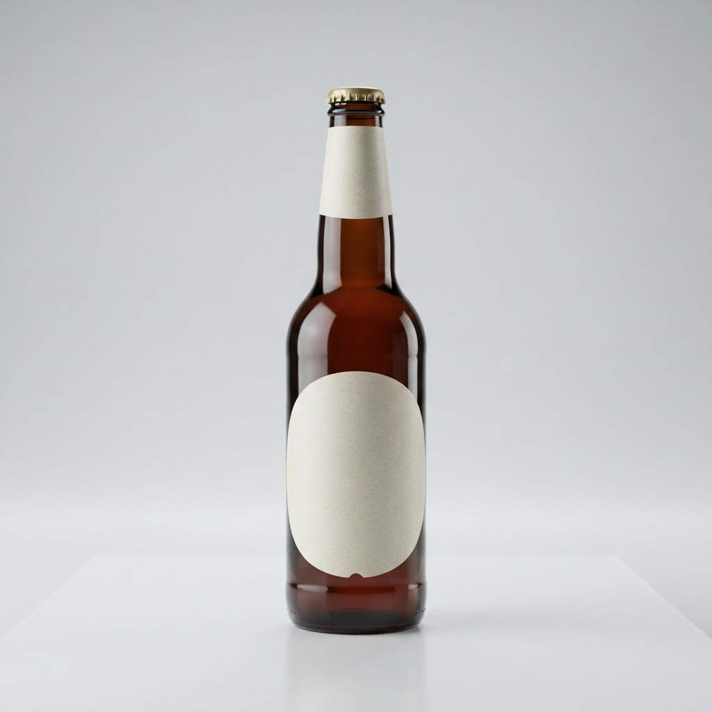
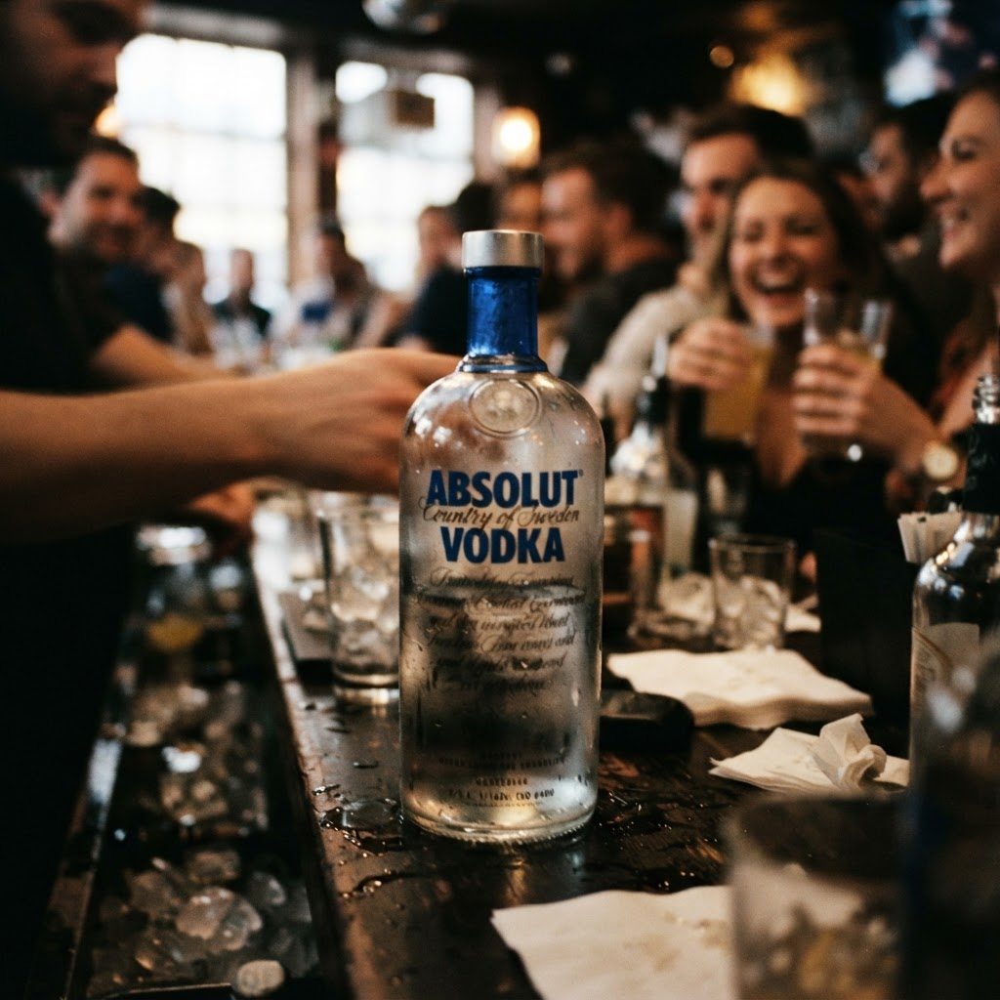

Доставка разливного пива на дом спб с доставкой в Приморском районе

Живете в Янино и хотите освежиться, не покидая квартиры? Теперь доступна качественная доставка разливного пива на дом спб с доставкой в Приморском районе, работающая круглосуточно.
Почему доставка разливного пива на дом спб с доставкой в Приморском районе выгодна ночью
Ночной отдых часто омрачается отсутствием возможности приобрести качественные напитки после закрытия магазинов. Наша модель работы устраняет этот дефицит, обеспечивая оперативную логистику в течение часа. Выгода заключается в экономии личного времени и сохранении атмосферы вашего досуга. Мы оптимизировали маршруты, чтобы курьеры успевали привезти свежее разливное пиво даже в самые отдаленные точки Янино и прилегающих территорий. Отсутствие необходимости прерывать вечер ради похода до ближайшего пункта продажи — это главный экономический и психологический плюс услуги. Мы берем на себя транспортные издержки, предлагая фиксированное время ожидания, которое не зависит от дорожной ситуации или времени суток. Это профессиональный подход к сервису, где клиент платит только за продукт и его мгновенную транспортировку к порогу. Отлаженная цепочка поставок гарантирует, что напиток сохранит все свои органолептические свойства при перевозке, что невозможно при попытках самостоятельного приобретения в ночное время.
Преимущества оперативной логистики для клиента
Скорость — ключевой актив современного потребителя. Когда логистическое плечо сокращено до шестидесяти минут, ценность услуги возрастает многократно. Мы исключили лишние звенья в цепи заказов, сосредоточившись на мобильности курьерского состава. Клиент получает продукт в идеальном состоянии, не переплачивая за сопутствующие товары или наценки, которые часто встречаются в круглосуточных точках продаж. Это чистая выгода от владения временем: вместо часа ожидания в очередях или поиска открытых заведений вы тратите время на отдых, пока заказ находится в пути. Системность подхода позволяет нам гарантировать соблюдение температурного режима и аккуратность доставки. Для жителя Янино это означает предсказуемый результат: вы делаете запрос и точно знаете, когда напиток окажется на столе. Такая точность исполнения превращает спонтанное желание в организованный процесс, лишенный хаоса и неопределенности.
Как обеспечивается свежесть разливного пива при такой быстрой доставке?
Мы используем профессиональное оборудование для розлива и специализированные термоизоляционные боксы для транспортировки. Процесс упаковки происходит непосредственно перед выездом курьера, что минимизирует контакт с внешней средой. Это позволяет доставить продукт в том же качестве, которое он имеет сразу после розлива в кег.
Итог
Итог всегда один: назвать следующий шаг покупателю — оформить заказ и получить его в течение часа в своём районе.
Заказать доставку
Оформите заказ сейчас: привезём за 40-60 минут в любой район Петербурга, круглосуточно.
Призыв
Сколько стоит заказать водку с доставкой на дом спб в Приморском районеЖители Янино часто сталкиваются с дефицитом качественных напитков в ночное время. Оперативная логистика позволяет получить заказ в кратчайшие сроки, обеспечи…Доставка коньяка спб с доставкой в Приморском районеЖители Янино часто сталкиваются с трудностями при поиске качественного алкоголя в ночное время. Оперативная доставка коньяка спб с доставкой в Приморском рай… Доставка пива алкогольного спб с доставкой в Приморском районеЯнино стремительно застраивается, однако потребность в качественном сервисе остается высокой. Ночная доставка пива алкогольного спб становится приоритетной з…Доставка коньяка на дом спб с доставкой в Приморском районеЯнино стремительно застраивается, однако качественный сервис по-прежнему остается редкостью. Оперативная доставка коньяка на дом спб с доставкой в Приморском…
Доставка пива алкогольного спб с доставкой в Приморском районеЯнино стремительно застраивается, однако потребность в качественном сервисе остается высокой. Ночная доставка пива алкогольного спб становится приоритетной з…Доставка коньяка на дом спб с доставкой в Приморском районеЯнино стремительно застраивается, однако качественный сервис по-прежнему остается редкостью. Оперативная доставка коньяка на дом спб с доставкой в Приморском…